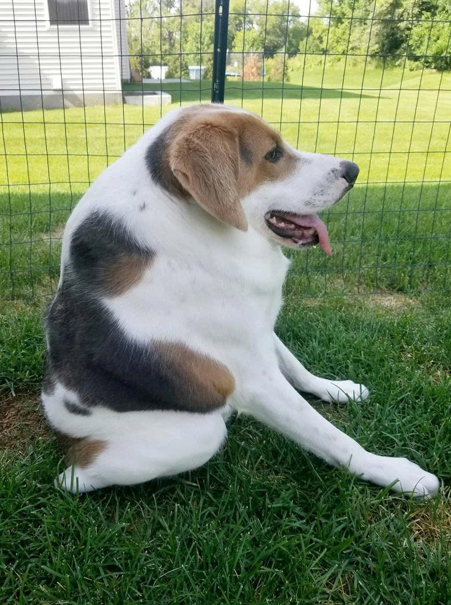
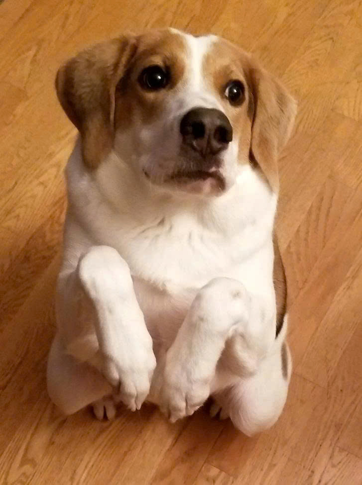

Sinh ra đã dị dạng xấu xí, chú chó bị ruồng bỏ và đối mặt với bản án tử
Chú chó Cooper sinh ra với căn bệnh cột sống ngắn hiếm gặp, khiến cho cơ thể nó trở nên dị dạng.
Cooper là một trong số 30 chú chó trên thế giới được sinh ra với hội chứng cột sống ngắnhiếm gặp. Đốt sống của nó bị dính liền vào nhau ở phần cổ và phần mông, khiến cho cơ thể nó giống như bị ép lại còn một nửa. Chú chó 2 tuổi này trông như thể không có cổ, còn mông thì nằm ở trên lưng.
Cooper không thể đi vệ sinh một cách bình thường, và mỗi lần muốn nhìn ra phía sau, nó phải xoay toàn bộ cơ thể.

Căn bệnh của Cooper là do giao phối cận huyết gây ra. Nó được các nhân viên cứu trợ động vật giải cứu vào mùa hè năm 2017 tại một trang trại lai giống chó ở Virginia, lúc nó mới được 2 tháng tuổi. Chính vì sinh ra đã dị dạng nên Cooper bị những người chủ ở đây vứt bỏ vì nó không thể giúp họ kiếm được tiền.
Lúc mới được cứu, tình trạng của Cooper là khá tệ. Không những yếu ớt, nó còn bị ve chó, giun sán và thoát vị. Nó không thể bước đi trên những mặt đường cứng và thậm chí không thể đi lâu. Nó chỉ có thể đi trên những mặt phẳng mềm, chẳng hạn như cỏ và thảm.

Nó đi vệ sinh cũng rất khó khăn.
Thông thường với những chú chó mắc phải căn bệnh hiểm nghèo như Cooper , chúng sẽ bị tiêm thuốc để chết. Nhưng may thay chú chó đã được một gia đình nhận nuôi. Dù vậy, chỉ được một thời gian, họ cũng bỏ cuộc vì Cooper quá hiếu động, hay đuổi bắt mèo.
Cuối cùng, Cooper được một gia đình khác nhận nuôi cùng với ba chú chó khác của họ. Tuy nhiên vận rủi vẫn không buông tha chú chó tội nghiệp. Chỉ vài tháng sau khi về ngôi nhà mới, Cooper bị té ngã và bị rạn 5 chỗ ở xương cổ. Vài tháng trước đây, nó bắt đầu có những dấu hiệu đau đớn và bị phát hiện mắc bệnh viêm xương tủy. Nó còn phải lên bàn mổ để giúp cho việc đi vệ sinh trở nên dễ dàng hơn.
Nó đi vệ sinh cũng rất khó khăn.